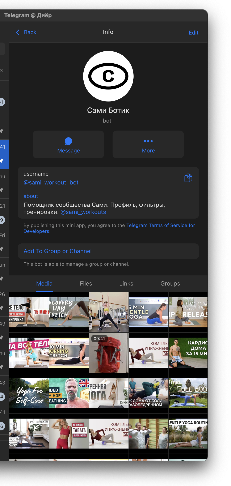

Не мотивация. Структура.
Люди хотят двигаться. Открывают YouTube — десять миллионов видео. Двадцать минут ищут подходящее, сдаются, включают сериал.
Проблема не в лени. Каждый день нужно заново решать: что делать, сколько, какого уровня.
Сами — Telegram-канал, который убирает этот выбор. Одна тренировка в день. Только коврик. Стретчинг, сила, мобильность, йога, дыхание, кардио, восстановление — семь категорий, семь дней.
Сезоны
Один сезон — 21 день. Три полных недели. Каждый день привязан к своей категории: понедельник — стретчинг, вторник — сила, среда — мобильность.
Это ритуал, а не программа. Не нужно планировать. Открыл канал — сделал — закрыл.
После тренировки можно нажать «Я сделаль» в обсуждении — намеренно игривая форма, часть тона бренда. Бот считает серию дней подряд. Никакого рейтинга — только фиксация для себя.

Откуда контент
Бот ищет тренировки на YouTube по ключевым словам. Каждое видео оценивается по нескольким критериям: просмотры, лайки, авторитет канала, длительность.
Но главный фильтр — ценности бренда. Алгоритм отсекает контент с риторикой «исправь своё тело», акцентом на похудении или соревновательной риторикой. Проходит только спокойное, инструкторское видео про движение без инвентаря.
YouTube в России ограничен, поэтому бот скачивает видео и публикует как нативный файл в канал.
Безопасное пространство
Группа обсуждения защищена многослойной модерацией: капча при входе, опрос цели (ритм, гибкость, сила, «просто смотрю»), персональное приветствие в личку, антиспам, репутационная система.
Тон коммуникации — тёплый, без давления. Бот не мотивирует, а фиксирует: «Ты сделаль. 5 дней подряд.»
Почему это работает
Рынок онлайн-фитнеса в России — 4,8 млрд ₽ по топ-25 платформам. Рост +37% год к году. Прогноз — 42 млрд к 2032 (CAGR 20–30%).
Лидер — FitStars с ~1,2 млрд ₽ выручки. Остальное — фрагментированный рынок мелких игроков. Доминирующего Telegram-сообщества в нише нет.
YouTube в России ограничен. Это создаёт спрос на альтернативный доступ к фитнес-контенту. Сами решает эту проблему: находит, фильтрует, доставляет — как нативный файл в канал.
Тренды работают в пользу продукта: домашние тренировки без инвентаря растут, комьюнити-формат вовлекает сильнее подписок, а AI-персонализация снижает порог входа.
Куда дальше
Telegram-канал — первая фаза. Валидация формата, тона, ритуала. Следующий шаг — нативное приложение.
Приложение. Персональный план тренировок на основе данных о пользователе: уровень, цели, история. Не библиотека видео — одна тренировка в день, подобранная алгоритмом. Трекинг прогресса без геймификации.
Маркетплейс тренеров. Верифицированные тренеры публикуют программы. Сообщество оценивает контент. Тренеры получают аудиторию, пользователи — разнообразие и качество.
AI-обратная связь. Анализ формы через камеру. Коррекция техники в реальном времени. Адаптация сложности после каждой тренировки.
Ядро остаётся неизменным: ритуал, а не программа. Спокойный тон. Движение ради здоровья, а не ради тела.
Три агента
Система работает на трёх автономных агентах:
Стратег — запускается раз в день. Анализирует метрики, бэклог, конкурентов. Формирует пакет задач и ключевых слов для поиска контента.
Комьюнити-бот — работает на Railway 24/7. Принимает пакет от стратега, ищет видео, управляет модерацией, публикует контент, ведёт профили пользователей.
Аналитика — встроенный модуль. Ежедневно собирает: подписчики, публикации, выполнения, ретеншн.
Стек
TypeScript, grammY, SQLite (WAL), node-cron, yt-dlp, ffmpeg, Claude API. Railway 24/7. 111 тестов в Vitest. GitHub Actions для стратега и бэкапов. Деплой через git push.
Моя роль
Единственный участник проекта.
- Продуктовая концепция и позиционирование
- Бренд, тон коммуникации, UX бота
- Архитектура трёхагентной системы
- Разработка — 7 800+ строк TypeScript, 111 тестов
- Деплой и мониторинг (Railway 24/7)